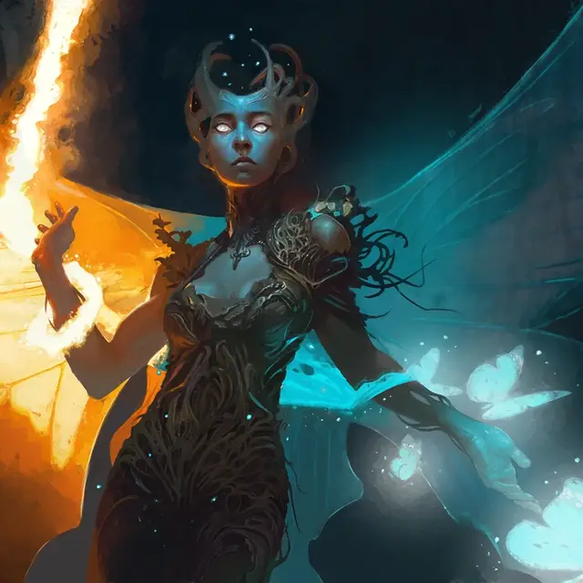

Маг высших фей
High Fae Mage
Средняя Фея (Чародей), любое мировоззрение

Класс Доспеха 14 (17 с доспехом мага)
Хиты 148 (27к8 + 27)
Скорость 30 футов, летая 30 футов (парит)
| мод | спас | ||
|---|---|---|---|
| СИЛ | 11 | +0 | +0 |
| ЛОВ | 18 | +4 | +4 |
| ТЕЛ | 12 | +1 | +1 |
| мод | спас | ||
|---|---|---|---|
| ИНТ | 17 | +3 | +7 |
| МДР | 15 | +2 | +6 |
| ХАР | 24 | +7 | +11 |
Навыки Магия +11, Природа +7, Расследование +7
Сопротивление урону дробящий, колющий, рубящий от немагических атак
Чувства тёмное зрение 60 футов, пассивное Восприятие 12
Языки Общий, Сильван
Опасность 12 (8400 опыта)
Бонус мастерства +4
Особенности
Сопротивление магии. Высшая фея совершают с преимуществом спасброски от заклинаний и других магических эффектов.
Действия
Мультиатака. Высшая фея совершает две атаки Ударом стихий.
Удар стихий. . Дальнобойная или рукопашная атака заклинанием: +11 к попаданию, досягаемость 5 фт. или дистанция 60 фт., одна цель. Попадание: 18 (2к10 + 7) урона кислотой, холодом, огнем, силовым полем, электричеством или звуком (на выбор высшей феи).
Договор жизни (перезарядка 5–6). Высшая фея заключают магическую сделку, выкачивая энергию из своих противников, чтобы залечить свои раны. Высшая фея нацеливается на трех видимых ею существ, в пределах 60 футов. Каждая цель должна совершить спасбросок Телосложения Сл 19, получая 26 (4к12) урона некротической энергией при провале или половину этого урона при успехе. После чего высшая фея восстанавливает 30 хитов.
Использование заклинаний. Высшая фея накладывает одно из следующих заклинаний, не требующее материальных компонентов и использующее Харизму в качестве базовой характеристики для заклинания (Сл спасброска 19):
• Неограниченно: пляшущие огоньки [dancing lights], обнаружение магии [detect magic], искусство друидов [druidcraft], доспехи мага [mage armor] (только на себя);
• 2/день каждое: огонь фей [faerie fire], порыв ветра [gust of wind], отражения [mirror image].
Реакции
Контрзаклинание фей. Высшая фея прерывает видимое им существо, накладывающее заклинание с вербальными, соматическими или материальными компонентами. Заклинатель получает 10 (3к6) урона психической энергией и должен совершить спасбросок Харизмы Сл 19. В случае провала заклинание терпит неудачу и не оказывает никакого эффекта, но ячейка заклинания, использованная для его накладывания, не расходуется.
Описание
«Высшие феи способны на магию, по сравнению с которой даже сам великий Гадвик покажется не более чем неуклюжим учеником».
— Чулане, рассказчик
Маги высших фей — одни из самых могущественных магов среди фей Элдраина. Эти опытные заклинатели овладели тайным искусством заключения сделок с феями, чтобы магически добиваясь себе преимуществ в бою.
Как и многие высшие феи, эти маги черпают силу из скрытой энергии, которую можно найти в дебрях Элдраина. Однако высшие маги фей также образуют прочные связи с силами стихий Элдраина, позволяя магам призывать такие силы, как восточный ветер или горящий очаг.
Высшие феи
Нестареющие и бесчеловечные высшие феи — старейшие существа Элдраина, олицетворяющие природное великолепие и опасность дикой природы. Высшие феи не уважают смертные ценности чести и закона, но, действуют по собственным нерушимым правилам: подарки всегда должны быть возвращены, обещания должны соблюдаться, и никогда не следует говорить откровенную ложь (хотя неверное направление и загадки всегда приветствуются). Чтобы развлечься на протяжении долгих столетий своей жизни, высшие феи часто прибегают к обманам и другим сложным остроумным играм друг против друга.
Большинство высших феи остаются уединёнными глубоко в дебрях Элдраина. Они черпают силу из пятнышек света, встречающихся в дебрях, и используют свою врожденную магию иллюзий для усиления и украшения своего оружия.
Высшими феями управляет Талион, Добрый Лорд. Талион столь же странен, древен и непостоянен, как дебри Элдраина, и Добрый Лорд требует от последователей верности и уважения. Несмотря на суровую манеру поведения, Добрый Лорд также известен тем, что следует таинственным прихотям и путешествует в самые дальние уголки Элдраина из-за ненасытного любопытства.